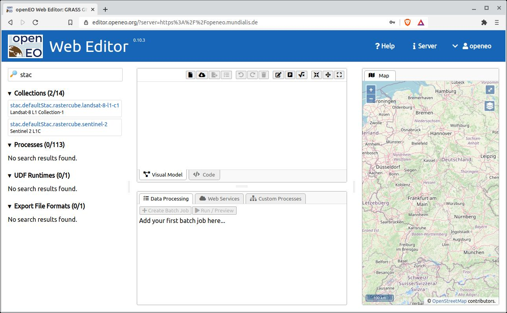
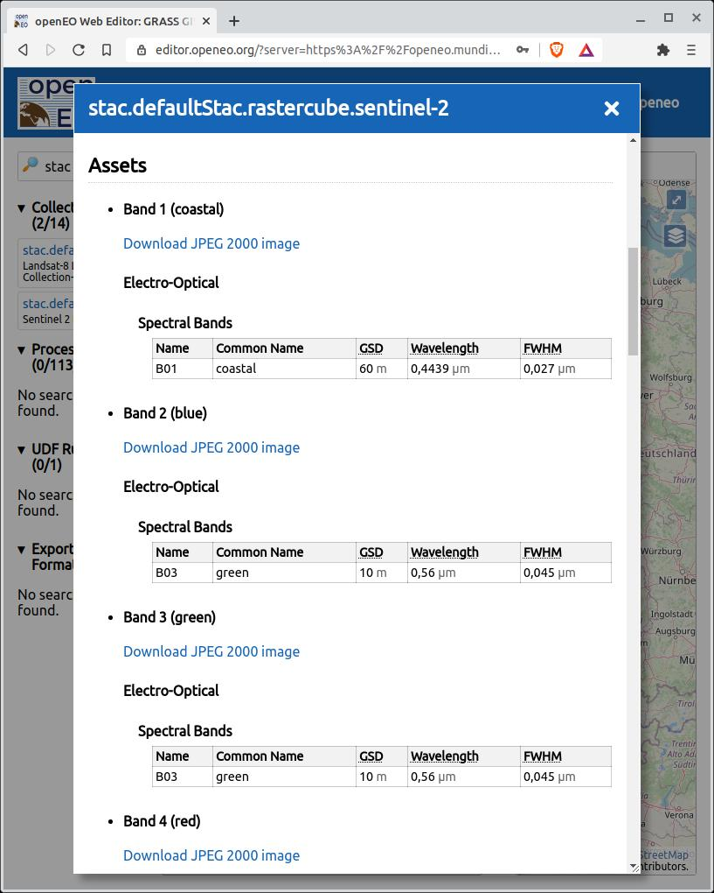
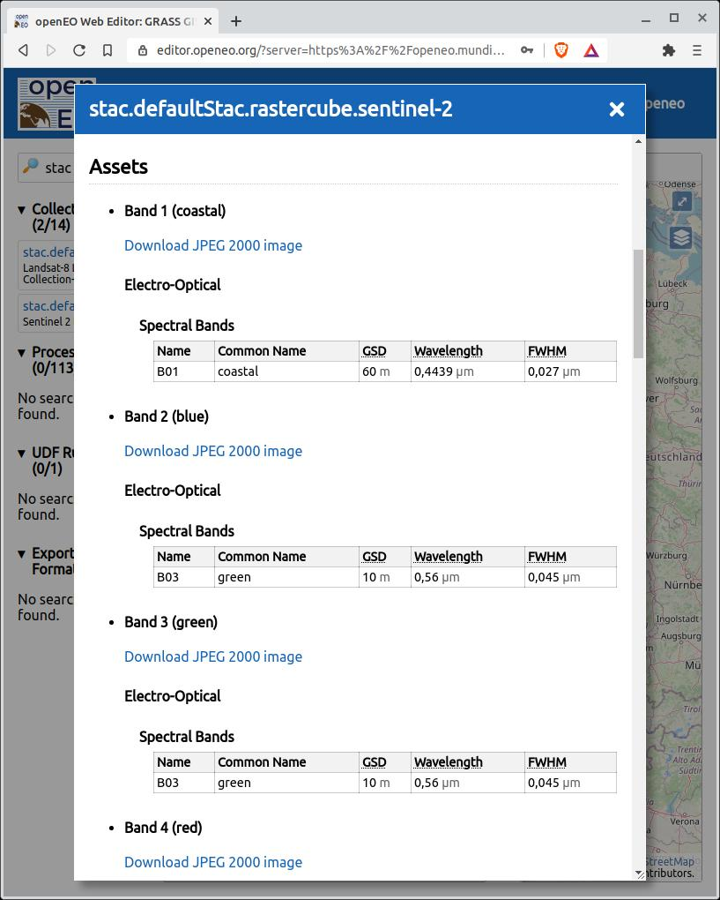

STAC und openEO in der Praxis:
Integration in actinia

Carmen Tawalika - mundialis - FOSSGIS 2022
mundialis GmbH & Co. KG
 |
 |
|||
 |
 |
 |
 |
 |


# STAC
- __SpatioTemporal Asset Catalog__
- Gemeinsame Sprache zur Beschreibung raum- und zeitbezogener Daten
- Ziele:
- Daten können __leichter indiziert__ werden
- Daten können __leichter gefunden__ werden
- __kein neuer Code nötig__ bei Veröffentlichung von neuem Datensatz / API
- __Konzepte__
- `Item`
- `Catalog`
- und `Collection`
# STAC Item
* An Item represents a single spatiotemporal asset as GeoJSON so it can be searched.
* Items require a link back to the collection they are part of. If a field is the same for all items in one collection, the field should be moved to the collection
* Items can only belong to one Collection
* Items are always tree leaves
* A STAC item is always a GeoJSON with geometry (bbox), properties and links. For properties, the field `datetime` is required
* Other fields might be thumbnail, asset links (download or streaming access), relationship links, core set of Common Metadata + STAC Content Extensions (see below)
# STAC Catalog
* The Catalog specification provides structural elements, to group Items and Collections.
* A catalog/collection is typically the "entry point" into a STAC object hierarchy (root endpoint).
* Catalogs are used for two main things:
* Split overly large collections into groups or
* Group collections into a catalog of Collections (e.g. as entry point).
* A catalog has an id, description, stac_version and links
# STAC Collection
* Collections are catalogs, that add more required metadata and describe a group of related Items.
* A Collection can have parent Catalog and Collection objects, as well as child Item, Catalog, and Collection objects. It must have none
* Ideally Collections also link to fuller metadata (ISO 19115, etc) when available
* A collection has all fields of a catalog + license and extent
# actinia-stac-plugin
Über das Plugin wird actinia selbst zu einem STAC. Bisher wurden zwei Konzepte implementiert:
- __Instances__: Virtueller Raum, in dem der Benutzer STAC-Collections speichern kann
- __Collections__: Bezieht sich auf die STAC-Collections, die innerhalb einer Instanz gespeichert sind. Es wird eine interne ID zugeordnet: `stac.<>.rastercube.<>`
# CREATE: POST instances
- Erstellen einer neuen Instanz
- So kann der Nutzer die Collections nach Themen(-bereichen) oder jeder gewünschten Organisationsebene organisieren
```
14:30 $ cat stac.json
{
"stac_instance_id": "dlr",
}
curl -X POST -u $user:$pw -d @stac.json https://actinia-dev.mundialis.de/api/v3/stac/instances | jq
{
"StacInstance": null,
"message": "The Instance has been added successfully"
}
```
# CREATE: POST collections
- Erstellen einer neuen Collection
- Diese Collections muss zu einer bestehenden Instanz hinzugefügt werden
```
14:30 $ cat stac.json
{
"stac_instance_id": "dlr",
"stac_url": "https://geoserver.dlr.loose.eox.at/ogc/stac/collections/S2_L2A_MSI_COG"
}
curl -X POST -u $user:$pw -d @stac.json https://actinia-dev.mundialis.de/api/v3/stac/collections | jq
{
"StacCollection": {
"stac.dlr.rastercube.S2_L2A_MSI_COG": {
"href": "api/v3/stac/collections/stac.dlr.rastercube.S2_L2A_MSI_COG",
"root": "https://geoserver.dlr.loose.eox.at/ogc/stac/collections/S2_L2A_MSI_COG"
}
},
"message": "The STAC Collection has been added successfully"
}
```
# READ: GET instances
- Listet alle Instances
- Details über spezifische Instance
- Spezifische Instance zeigt gespeicherte Collections
- Zeigt ID, link in actinia und Ursprung (root URL) der Collections
```
curl -u $user:$pw -q https://actinia-dev.mundialis.de/api/v3/stac/instances | jq
{
"defaultStac": {
"path": "stac.defaultStac.rastercube."
},
"dlr": {
"path": "stac.dlr.rastercube."
}
}
curl -u $user:$pw -q https://actinia-dev.mundialis.de/api/v3/stac/instances/dlr | jq
{
"stac.dlr.rastercube.S2_L2A_MSI_COG": {
"href": "api/v3/stac/collections/stac.dlr.rastercube.S2_L2A_MSI_COG",
"root": "https://geoserver.dlr.loose.eox.at/ogc/stac/collections/S2_L2A_MSI_COG"
}
}
```
# READ: GET collections
- Listet alle Collections
- Details/Inhalt über spezifische Collection
- Dieser Inhalt sieht genauso aus, wie im Ursprung (root URL)
```
curl -u $user:$pw -q https://actinia-dev.mundialis.de/api/v3/stac/collections| jq
{
"collections": [
{
"id": "stac.dlr.rastercube.S2_L2A_MSI_COG",
"title": "Sentinel-2 L2A MSI Products (Cloud-Optimized)",
"description": "S2 L2A MSI Cloud-Optimized GeoTiff Products of Tanzania processed by DLR for the LOOSE project",
"extent": {
"spatial": {"bbox": [[ 30.1918571065124, -16.3692458600817, 42.834039161154, -0.2636709443366629]]},
"temporal": {"interval": [["2020-01-01T07:33:35.000+00:00","2020-12-30T08:03:03.000+00:00"]]}
},
"links": [
{
"href": "https://geoserver.dlr.loose.eox.at/ogc/stac/collections/S2_L2A_MSI_COG?f=application/json",
"rel": "self",
"type": "application/json"
},
...
],
...
}
]
}
14:46 $ curl -u $user:$pw -q https://actinia-dev.mundialis.de/api/v3/stac/collections/stac.dlr.rastercube.S2_L2A_MSI_COG | jq > test
genauso
```
# DELETE instances
- Löschen einer Instanz
```
14:45 $ curl -X DELETE -u $user:$pw -q https://actinia-dev.mundialis.de/api/v3/stac/instances/dlr | jq
{
"message": "The instance --dlr-- was deleted with all the collections stored inside"
}
```
# DELETE collections
- Löschen einer Collection
```
14:47 $ curl -X DELETE -u $user:$pw -q https://actinia-dev.mundialis.de/api/v3/stac/collections/stac.dlr.rastercube.S2_L2A_MSI_COG | jq
{}
```
# actinia STAC importer
Die STAC-Importer-Funktionalität in actinia-core fungiert als Brücke zwischen dem STAC-Plugin und actinia-ore.
Diese Brücke ermöglicht es dem Benutzer, Prozessketten zu erstellen, die die Vorteile der in den Instanzen gespeicherten STAC-Collections nutzen.
Darüber hinaus stehen dem Benutzer räumlich-zeitliche und semantische Labels zur Verfügung, die die Dauer des Prozesses durch die Reduzierung der zu analysierenden Elemente verbessern.
```
{
"list": [{
"id": "importer_1",
"module": "importer",
"inputs": [{
"import_descr": {
"source": "stac.defaultStac.rastercube.landsat-8-l1-c1",
"type": "stac",
"semantic_label": "B1",
"extent": {
"spatial": {
"bbox": [[30.192, -16.369, 42.834, -0.264]]
},
"temporal":{
"interval": [["2021-09-09", "2021-09-12"]]
}
},
"filter": {}
},
"param": "map",
"value": "example-red"
}
]
}],
"version": 1
}
15:42 $ curl -u $user:$pw -d @test -H 'Content-Type: application/json' https://actinia-dev.mundialis.de/api/v3/locations/nc_spm_08/processing_async_export | jq
```
# actinia STAC exporter
Die STAC-Exporter-Funktionalität in actinia-core trägt zur Vielfalt der Exportformate bei.
Sobald die STAC-Metadatenoption in der Prozesskette definiert ist, wird der Benutzer mit einem STAC-Ergebniskatalog initialisiert (nur beim ersten Mal) und innerhalb dieses Katalogs wird ein STAC-Element erstellt
Das STAC-Element wird erstellt und mit allen Metadaten aus der Ergebnis-Rasterkarte gefüttert (das einzige derzeit unterstützte Format)
```
{
"list": [
{
"module": "r.slope.aspect",
"id": "r_slope_aspect_1",
"inputs": [
{
"param": "elevation",
"value": "elev_ned_30m@PERMANENT"
}
],
"outputs": [
{
"export": {
"format": "GTiff",
"type": "raster"
},
"param": "slope",
"value": "elev_ned_30m_slope",
"metadata": {
"format": "STAC",
"type": "metadata",
"output_layer": "stac"
}
}
],
"flags": "a"
}
],
"version": "1"
}
```
# openEO API
openEO entwickelt eine offene API, um Clients (z.B. geschrieben in R, Python, JavaScript und andere) auf einfache und einheitliche Weise mit großen Erdbeobachtungs-Cloud-Backends zu verbinden.
* Jeder Client kann mit jedem Backend sprechen
* Backends werden vergleichbar im Hinblick auf Kapazität, Kosten und Ergebnisse (Validierung, Reproduzierbarkeit)
Die openEO-API gibt einen Überblick darüber, wie man
* herauszufinden, welche Erdbeobachtungsdaten und -prozesse in Cloud-Backends verfügbar sind,
* (verkettete) Prozesse auf Back-Ends auszuführen,
* benutzerdefinierte Funktionen (UDFs) auf Back-Ends auszuführen, wobei die UDFs auf unterschiedliche Weise mit den Daten in Kontakt kommen können,
* Herunterladen von (Zwischen-)Ergebnissen und
* Verwaltung von Benutzerinhalten einschließlich der Rechnungsstellung.
# common endpoint
> Die Collection-Spezifikation kann ganz einfach eigenständig verwendet werden - sie dient zur Beschreibung
Datenaggregation zu beschreiben und benötigt keine Links zu Unterkatalogen und Objekten.
[...] Sie haben oft ein optimiertes internes Format, bei dem es keinen Sinn macht
als Items darzustellen. OpenEO und Google Earth Engine sind zwei Beispiele, die nur STAC
Sammlungen, ...
# STAC API Empfehlungen
* Data Discovery wie in openeo (STAC + OGC features)
* GET /collections
* GET /collections/{collection_id}
* STAC volle Implementierung, **nicht** in openeo
* GET /collections/{collectionId}/items
* GET /collections/{collectionId}/items/{featureId}
# openeo-grassgis-driver
* Backend Implementierung von openEO API in python
* https://github.com/Open-EO/openeo-grassgis-driver
* Kommuniziert über actinia per HTTP mit GRASS GIS
actinia + STAC + openEO
actinia + STAC + openEO
 

# Conclusion